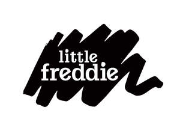

Trade Mark Journal No.2025/046 14 November 2025
UK00004255245 27 August 2025 (5,29,30,35)

- Class 5
- Wheat germ dietary supplements; Food for babies; Nutritional supplements; Dietetic substances adapted for medical use; Dietetic foods adapted for medical purposes; Glucose dietary supplements; Lacteal flour for babies; Powdered milk for babies; Probiotic supplements; Babies' napkins [diapers]; Babies' diaper-pants.
- Class 29
- Milk beverages containing fruits; Vegetable puree; Fruit-based snack food; Fruit purees; Pressed fruit paste; Prunes; Vegetable marrow paste; Vegetables, processed; Dried edible seaweed; Mashed potatoes; Tomato purée; Milk; Milk products; Cheese; Vegetable-based snack food.
- Class 30
- Rice flour; Sugar; Rice flour porridge; Bread; Rice crackers; Rice-based snack food; Biscuits; Cereal preparations; Cereal flour; Noodles; Cooking salt.
- Class 35
- Advertising; Commercial administration of the licensing of the goods and services of others; Administrative services for the relocation of businesses; Provision of an online marketplace for buyers and sellers of goods and services; Sales promotion for others; Business management for freelance service providers; Photocopying services; Book-keeping and accounting; Rental of sales stands; Retail or wholesale services for pharmaceutical, veterinary and sanitary preparations and medical supplies.
SUNNY FIELDS ENTERPRISE LIMITED
Representative: Handsome I.P. Ltd